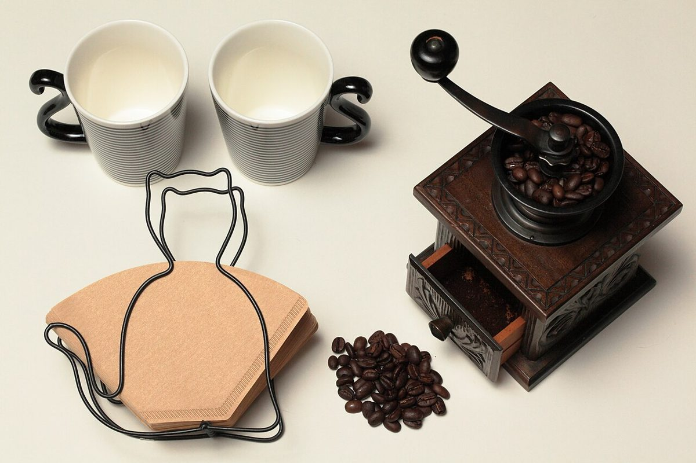

店のこと
六つの部位とお店の案内


部位の解説
図の見かた
制作側の連想で、お店の理念・由来とは無関係です。ストラップは首にかける織りテープから、先の金具、下げるケースまで、いくつかの部品が順につながってできています。ここでは番号の順にひとつずつ紹介します。
1
ストラップ本体
首にかける、細長い織りテープの部分。左右に分かれて下へ集まる。
2
ナスカン
ストラップの先についた、開閉できる小さな留め金具。
3
安全バックル
首の横に入れる、力がかかると外れる仕組みの留め具。
4
長さ調整スライダー
テープを通して、垂れ下がる長さを変えるための小さな金具。
5
カードケース
名札やカードを入れて下げるための、透明な窓つきのケース。
6
接続リング
テープの先と金具とをつなぐ、小さな輪。


写真はコーヒーやパンのイメージです。お店のものではなく、お店で提供している商品を示すものでもありません。
お店について
わかっていること
屋号は「Coffee Roast 3710 みなと珈琲焙煎所」、業種はカフェです。それ以外の詳しいこと(こだわり・提供内容・営業日など)は、現在準備中です。確認できた情報が増え次第、ご案内します。
| 所在地 | 〒706-0002 岡山県玉野市築港１丁目１０−３１ |
|---|---|
| 電話 | 準備中 |
| 営業時間 | 準備中 |
| 定休日 | 準備中 |
| ご予約 | 準備中 |
| 駐車場 | 準備中 |
| SNS | Instagram @coffeeroast3710 |